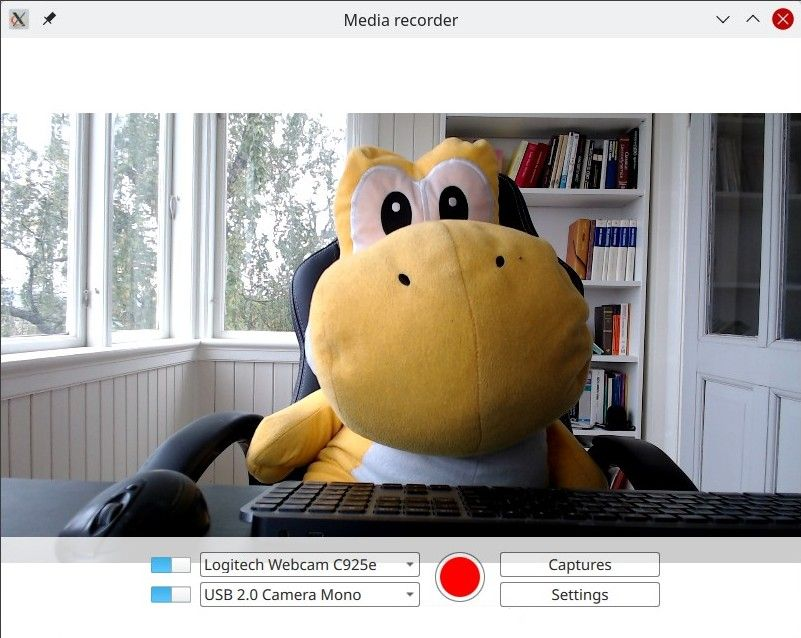
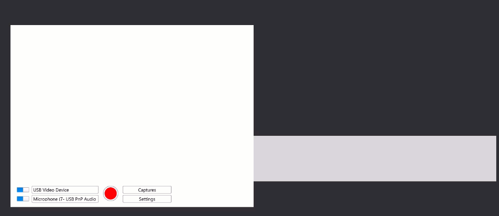
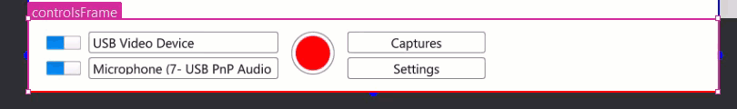

QML Video Recorder
Recording audio and video using Qt Quick.

QML Recorder demonstrates a simple application that can record audio and video separate or together, using a microphone, a camera, or with screen capturing.
Running the Example
To run the example from Qt Creator, open the Welcome mode and select the example from Examples. For more information, visit Building and Running an Example.
Overview
At its core, this is a QML application, see Getting Started Programming with Qt Quick. This documentation is focused on how this example uses the Qt Multimedia QML Types.

The example uses the QML Camera and AudioInput types connected to a CaptureSession. A MediaRecorder object is then used to record the captured audio and video.
In addition to QtMultimedia, features of Qt Quick Windows, Controls, and Layouts are used to implement the graphic user interface and functionality. Playback won't be covered here, for that see the QML Media Player Example.
The example demonstrates the following:
- Input devices can be selected.
- An input type switched off.
- Settings for capturing such as quality, codec choice, file format, and assigning metadata.
- Captured files are stored and can be played back.
Recording
The application implements recording.
captureSession
In main.qml, captureSession is declared like so:
CaptureSession {
id: captureSession
recorder: recorder
audioInput: controls.audioInput
camera: controls.camera
screenCapture: controls.screenCapture
windowCapture: controls.windowCapture
videoOutput: videoOutput
}
recorder
In main.qml, the MediaRecorder recorder handles recording media as well as capturing a thumbnail for the file and appending it to a ListModel, mediaList.
MediaRecorder {
id: recorder
onRecorderStateChanged:
(state) => {
if (state === MediaRecorder.StoppedState) {
root.contentOrientation = Qt.PrimaryOrientation
mediaList.append()
} else if (state === MediaRecorder.RecordingState && captureSession.camera) {
// lock orientation while recording and create a preview image
root.contentOrientation = root.screen.orientation;
videoOutput.grabToImage(function(res) { mediaList.mediaThumbnail = res.url })
}
}
onActualLocationChanged: (url) => { mediaList.mediaUrl = url }
onErrorOccurred: { recorderErrorText.text = recorder.errorString; recorderError.open(); }
}
mediaList is declared in the Frame mediaListFrame
Frame {
id: mediaListFrame
height: 150
width: parent.width
anchors.bottom: controlsFrame.top
x: controls.capturesVisible ? 0 : parent.width
background: Rectangle {
anchors.fill: parent
color: palette.base
opacity: 0.8
}
Behavior on x { NumberAnimation { duration: 200 } }
MediaList {
id: mediaList
anchors.fill: parent
playback: playback
controls

These are defined in Controls.qml and declared in main.qml.
Its root is a Row that contains the Columns inputControls, recordButton, optionButtons, each defined in their own .qml files.
Selecting a video source
Defined in VideoSourceSelect.qml, VideoSourceSlect is comprised of a Switch and a ComboBox and enables the user to select from available cameras.
Row { id: root height: Style.height property Camera selectedCamera: cameraAvailable ? camera : null property ScreenCapture selectedScreenCapture: screenAvailable ? screenCapture : null property WindowCapture selectedWindowCapture: windowAvailable ? windowCapture : null property bool sourceAvailable: typeof comboBox.currentValue !== 'undefined' && comboBox.currentValue.type !== 'toggler' && videoSourceSwitch.checked property bool cameraAvailable: sourceAvailable && comboBox.currentValue.type === 'camera' property bool screenAvailable: sourceAvailable && comboBox.currentValue.type === 'screen' property bool windowAvailable: sourceAvailable && comboBox.currentValue.type === 'window' Component.onCompleted: { videoSourceModel.populate() for (var i = 0; i < videoSourceModel.count; i++) { if (videoSourceModel.get(i).value.type !== 'toggler') { comboBox.currentIndex = i break } } } Camera { id: camera active: cameraAvailable } ScreenCapture { id: screenCapture active: screenAvailable } WindowCapture { id: windowCapture active: windowAvailable } MediaDevices { id: mediaDevices } Switch { id: videoSourceSwitch anchors.verticalCenter: parent.verticalCenter checked: true } ListModel { id: videoSourceModel property var enabledSources: { 'camera': true, 'screen': true, 'window': false } function toggleEnabledSource(type) { enabledSources[type] = !enabledSources[type] populate() } function appendItem(text, value) { append({ text: text, value: value}) } function appendToggler(name, sourceType) { appendItem((enabledSources[sourceType] ? "- Hide " : "+ Show ") + name, { type: 'toggler', 'sourceType': sourceType }) } function populate() { clear() appendToggler('Cameras', 'camera') if (enabledSources['camera']) for (var camera of mediaDevices.videoInputs) appendItem(camera.description, { type: 'camera', camera: camera }) appendToggler('Screens', 'screen') if (enabledSources['screen']) for (var screen of Application.screens) appendItem(screen.name, { type: 'screen', screen: screen }) appendToggler('Windows', 'window') if (enabledSources['window']) for (var window of windowCapture.capturableWindows()) appendItem(window.description, { type: 'window', window: window }) } }
comboBox, declared in the above snippet, assigns the current video source.
ComboBox {
id: comboBox
width: Style.widthLong
height: Style.height
background: StyleRectangle { anchors.fill: parent }
model: videoSourceModel
displayText: typeof currentValue === 'undefined' ||
currentValue.type === 'toggler' ? "Unavailable" : currentText
font.pointSize: Style.fontSize
textRole: "text"
valueRole: "value"
onCurrentValueChanged: {
if (typeof currentValue === 'undefined')
return
if (currentValue.type === 'screen')
screenCapture.screen = currentValue.screen
else if (currentValue.type === 'camera')
camera.cameraDevice = currentValue.camera
Selecting an audio input
Implemented in the same way as Selecting a video source and defined in AudioInputSelect.qml like so:
Row { id: root height: Style.height property AudioInput selected: available ? audioInput : null property bool available: (typeof comboBox.currentValue !== 'undefined') && audioSwitch.checked Component.onCompleted: { audioInputModel.populate() comboBox.currentIndex = 0 } MediaDevices { id: mediaDevices } AudioInput { id: audioInput; muted: !audioSwitch.checked } Switch { id: audioSwitch; height: Style.height; checked: true } ListModel { id: audioInputModel property var audioInputs: mediaDevices.audioInputs function populate() { audioInputModel.clear() for (var audioDevice of audioInputs) audioInputModel.append({ text: audioDevice.description, value: { type: 'audioDevice', audioDevice: audioDevice } }) } } ComboBox { id: comboBox width: Style.widthLong height: Style.height background: StyleRectangle { anchors.fill: parent } model: audioInputModel textRole: "text" font.pointSize: Style.fontSize displayText: typeof currentValue === 'undefined' ? "unavailable" : currentText valueRole: "value"